How to use SplitLog
Everything the app does, in the order you are likely to need it. The numbered dots on each screenshot mark what to tap.
- Start a workout
- Add exercises
- Log sets
- Warm-ups and drop sets
- Cardio
- Pause and finish
- Plan ahead
- Records and progress
- Your streak
- History
- Reminders
- Widget
- Units and themes
- Keeping your log safe
- Moving to a new iPhone
Start a workout
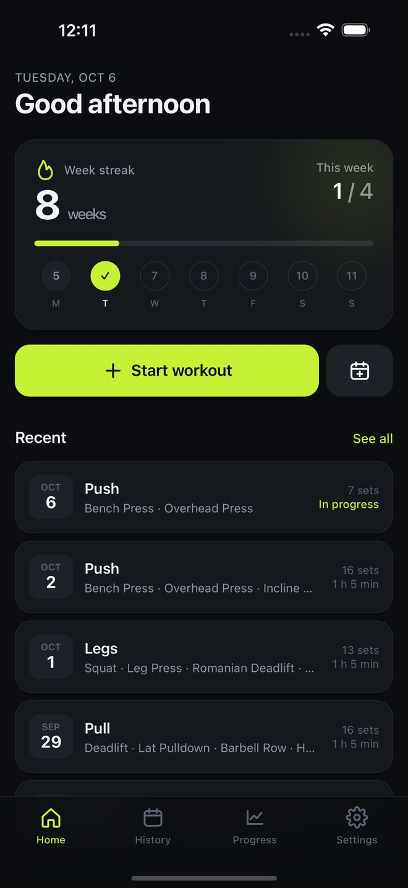
1234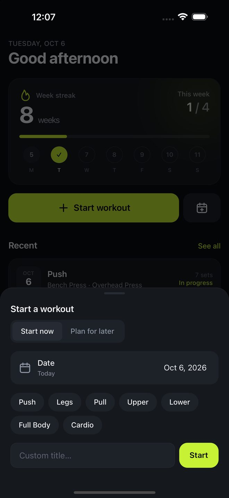
12345- On Home, tap Start workout.
- Tap a title such as Push or Legs, or type your own and tap Start.
The workout opens straight away and a timer starts. To log a session you did on an earlier day, change the date in the same sheet before choosing a title. Past sessions have no timer.
A workout you leave without adding any exercise is discarded.
Add exercises
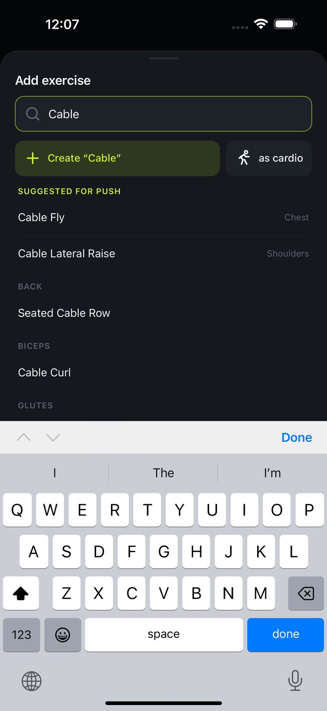
123- Tap Add exercise.
- Pick from the list, or search. Exercises you have used under the same workout title are suggested first.
- To add your own, type its name and tap Create. Choose as cardio for a cardio exercise.
If you did this workout before, Repeat last appears at the top of an empty workout and brings in the exercises from last time, each with one empty set. Last time's numbers show faintly in the empty fields, so the rows only ever count the sets you have done.
To delete an exercise you created from your library, hold it in the list. This also removes it from every workout it was logged in. Built-in exercises cannot be deleted.
Log sets
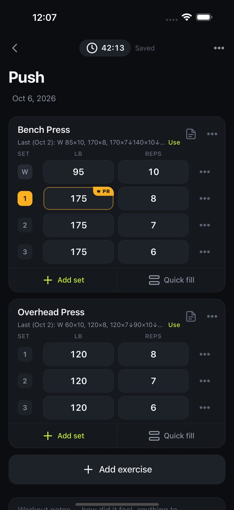
123456789- Type the weight and reps. Empty sets below take the same values, so three sets at one weight need typing once.
- Add set adds another with the same numbers as the one above.
- Quick fill logs several identical sets in one go, such as 3 sets of 8 at 185.
- Under the exercise name, Use copies the sets from the last time you did it.
- Swipe a set to the left to delete it. A long swipe deletes at once.
- Tap the note icon to write a note for the exercise. There is a box for notes on the whole workout at the bottom.
While a workout is in progress, changes are saved as you make them; the top of the screen reads Saved. A finished workout or a plan opens for editing instead: make your changes, then tap Save at the top. If you try to leave with unsaved changes, SplitLog asks whether to save or discard them.
Warm-ups, drop sets and sets to failure
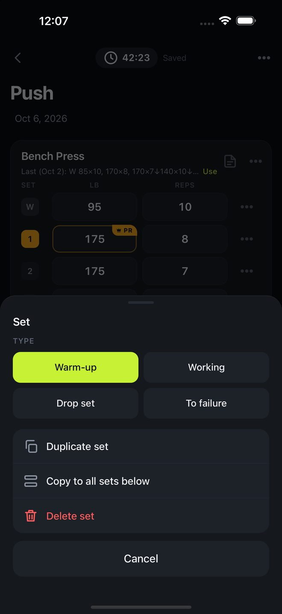
123456Tap the number at the start of a set to change its type, duplicate it, or copy it to the sets below.
- Warm-up sets are marked W. They do not count toward records or volume.
- Drop set: one set that steps down in weight. Tap + Drop again to add each step.
- To failure marks the set with F.
Cardio
Cardio exercises log intervals in place of sets. Each exercise shows up to four figures, chosen from time, distance, speed, incline, level, calories, heart rate, floors, power and cadence.
To choose them, tap the ••• on the exercise, then Variables. Time accepts 30, 30:00 or 1:05:00. If you log speed and time, the distance is worked out for you.
Pause and finish
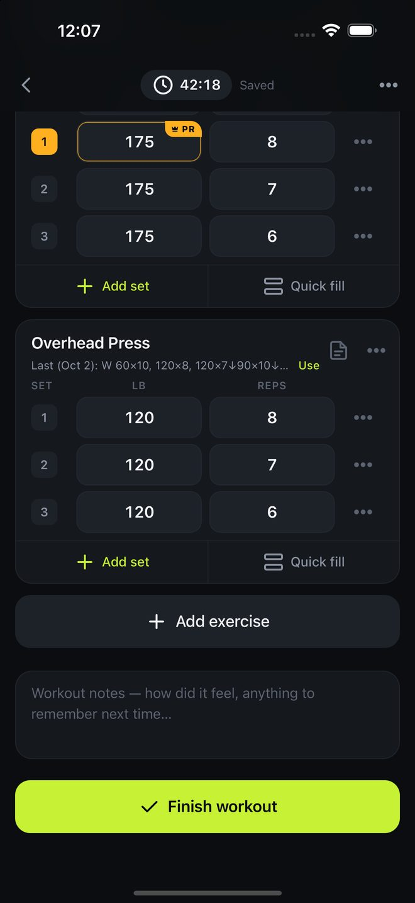
123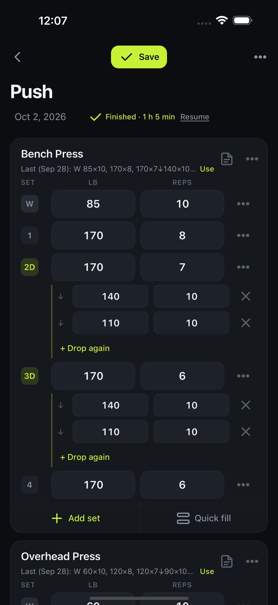
123- Tap the timer at the top to pause or resume, and to switch gym reminders on or off. Time spent paused is not counted.
- Tap Finish workout when you are done.
- To carry on with a finished workout, open it and tap Resume. The time in between is not counted.
- To delete a workout, swipe it to the left in a list, or hold it for options.
Plan ahead
- On Home, tap the calendar button next to Start workout.
- Choose the day and a title, then add the exercises and target sets.
- On the day, tap Start on the plan. Check each exercise off as you finish it.
Plans do not count toward your streak, your records or your history until you start them.
Records and progress
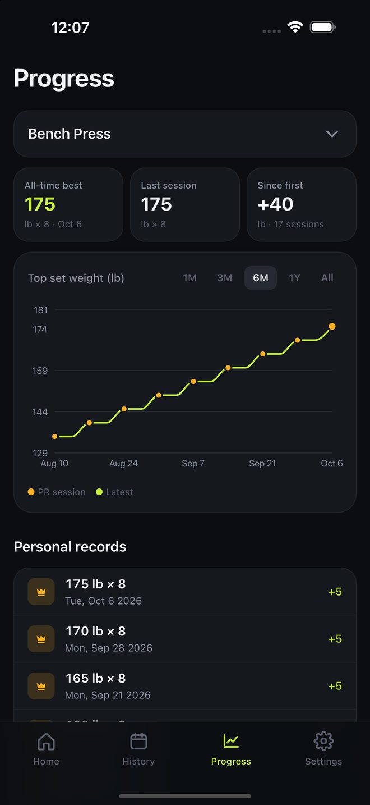
123A set is marked PR when its weight is higher than the heaviest you have logged for that exercise in any earlier workout. Warm-ups do not count.
The Progress tab shows, for any exercise, your all-time best, a chart of your top weight over time, and a list of every record. For cardio it shows time, distance and pace.
Your streak
A week counts when you train on at least as many different days as your weekly goal. Weeks run Monday to Sunday. The current week is added as soon as you reach the goal, and does not break the streak before it ends.
Change the goal in Settings, under Goal.
History
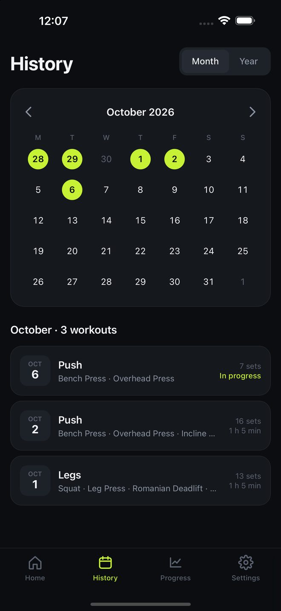
1234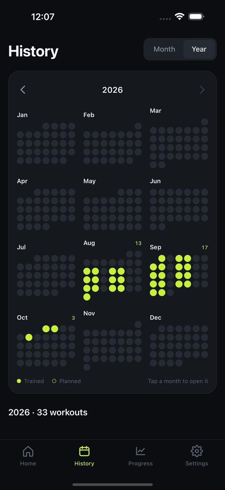
123The History tab is a calendar of the days you trained. Swipe left or right to change month, and tap a day to see its workouts. Switch to Year at the top to see the whole year as twelve small months with every training day lit; swipe to change year, and tap a month to open it.
Reminders
Both kinds are optional and are switched on in Settings. iPhone asks for permission the first time.
- Daily check-in: one reminder at the time you choose, only on days with no workout logged.
- Gym reminders: gentle nudges to log your sets while a workout is in progress. They stop when you pause or finish.
Home Screen widget
Hold an empty area of your Home Screen, tap Edit, then Add Widget, and search for SplitLog. There are two: Streak shows your streak and this week's training days, and Start workout is a one-tap tile that opens the app on the start sheet. The Start workout widget also fits the Lock Screen: hold the Lock Screen, tap Customize, and add it under the clock. On iOS 18 and later you can also put a Start workout control in a Lock Screen corner, in place of the flashlight or camera, or in Control Center: hold the Lock Screen, tap Customize, tap a corner button and choose SplitLog.
Units and themes
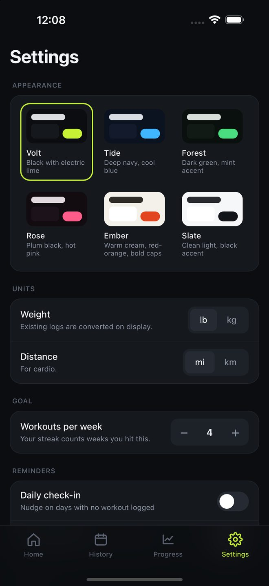
1234In Settings you can switch between pounds and kilograms, and miles and kilometres. Workouts you already logged are converted for display and keep the values you typed. There are six themes to choose from.
Keeping your log safe
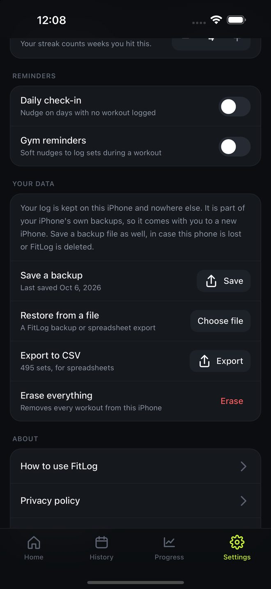
1234Your log is kept on your iPhone only. There is no account and no copy on a server, so if the phone is lost and you have no backup, the log is lost with it. Deleting SplitLog from your iPhone deletes the log too.
Save a backup file
- Open Settings in SplitLog and tap Save next to Save a backup.
- Choose Save to Files and pick iCloud Drive, or send the file to yourself.
The file holds everything: workouts, sets, notes, plans, your exercise library and your settings. SplitLog reminds you when your last backup is more than a month old.
Restore from a file
- Open Settings and tap Choose file next to Restore from a file.
- Pick the backup. SplitLog shows what is in it before anything changes.
- Tap Restore.
Restoring adds the file's workouts to what is on the phone. Nothing you logged is removed, and nothing is added twice: a workout that is already on the phone is recognised, even if it arrived from a spreadsheet, and a backup fills in its notes and session times.
Export a spreadsheet
Export to CSV makes a file with one row per set that opens in Numbers, Excel or Google Sheets. SplitLog can also restore from this file, but a spreadsheet holds sets only. Use a backup file to keep notes, plans and session times.
Erase everything
Erase everything in Settings removes every workout from the iPhone after you confirm. It cannot be undone.
Moving to a new iPhone
- On the old iPhone, save a backup file to iCloud Drive as described above. Do this even if you plan to transfer the whole phone.
- Set up the new iPhone. If you transfer from the old iPhone or restore from an iCloud backup, SplitLog and your log normally arrive with everything else.
- Open SplitLog on the new iPhone. If your workouts are there, you are done.
- If they are not, install SplitLog, open Settings, tap Choose file, and pick the backup from iCloud Drive.
Keep the old iPhone as it is until you have seen your workouts on the new one.